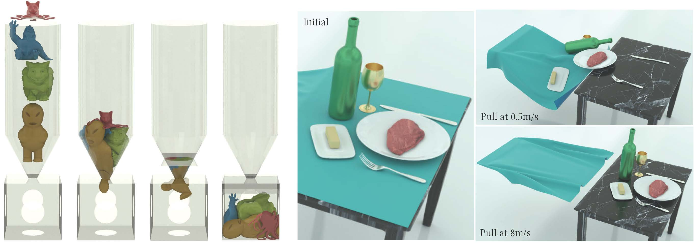

Contact
To accurately simulate solids, it's essential to ensure that they don't interpenetrate, as shown in the figure below (left side). One effective approach is to enforce the CFL (Courant-Friedrichs-Lewy condition) upper limit on timestep sizes, particularly in methods like MPM. In Finite Element Methods (FEM), this requires precise modeling of contact forces. However, accurately modeling contact poses a challenge. Contact is inherently a non-smooth process, happening abruptly as solids make contact. There isn't a potential energy formulation that can accurately depict this phenomenon.

In practical applications, determining if two objects have collided typically involves visually and mentally assessing their proximity. When the distance between them isn't zero, it indicates that space remains and no collision has occurred. This concept is crucial in modeling interactions between objects in a computational context.
To avoid collision or penetration, we can ensure that the distance between the surfaces of the moving objects never reduces to zero. This approach is particularly useful in time integration problems within computational simulations. We model this scenario using inequality constraints, which, when combined with boundary conditions, formulate our time integration problem as follows: Here, \(c_k\) measures the distance between specific pairs of regions on the surface of the solids, and \(\epsilon \rightarrow 0\) is a tiny positive value to ensure \(c_k(x)\) remains strictly positive.
At the local minimum of the problem in Equation (2.3.1), we adhere to the Karush-Kuhn-Tucker (KKT) condition, as follows: In this condition, \(\gamma_k\) is the Lagrange multiplier for the constraint \(c_k(x) \geq \epsilon\). To break it down, \(\nabla c_k(x)\) points in the direction of the contact force for contacting pair \(k\). The combination of this direction with the magnitude represented by \(\gamma_k\) gives us the actual contact force at that point.
Remark 2.3.1 (The Complementarity Slackness Condition). The complementarity slackness condition \(\gamma_k (c_k(x) - \epsilon) = 0\) plays a critical role in ensuring that contact forces are present (\(\gamma_k \neq 0\)) exclusively when the solids are in touch (\(c_k(x) = \epsilon\)). On the contrary, when the solids are not touching (\(c_k(x) > \epsilon\)), there should be no contact forces (\(\gamma_k = 0\)).
Definition 2.3.1 (Active Set). In optimization problems with inequality constraints defined as \[ \forall k, \ c_k(x) \geq 0, \] the active set is defined as \[ \{ l \ | \ c_l(x^*) = 0 \}. \] Here, \(x^*\) is a local optimal solution of the problem.
Remark 2.3.2 (Combinatorial Difficulty). The complementarity slackness condition reveals that only constraints within the active set will exhibit non-zero Lagrange multiplier \(\gamma_k\) at the solution. This suggests that, unlike equality constraints, inequality constraints not only require solving for the value of the Lagrange multipliers but also demand the identification of which \(\gamma_k\) should be set to \(0\). This presents a combinatorial difficulty.
A wide array of techniques are available for addressing optimization problems with inequality constraints. Each method introduces a distinct approach, effectively targeting various facets of the problem.
-
Primal-Dual Methods: This class of methods tackles both the primal problem (the original optimization problem) and its dual problem simultaneously. The dual problem often provides valuable insights into the primal problem's solution, making this approach attractive. These methods are iterative, refining an initial solution by leveraging the relationship between the primal and dual problems. However, designing and implementing primal-dual algorithms can be intricate, requiring a careful balance between the two problem types. While effective, these methods may not be efficient or straightforward for complex, high-dimensional problems.
-
Projected Steepest Descent Methods: A modification of the classic steepest descent method, these methods address constraints. At each iteration, the algorithm moves in the steepest descent direction, then projects back onto the feasible set if it deviates due to constraints. This method's simplicity and straightforwardness make it popular, but it may struggle with ill-conditioned problems where convergence is slow, or with constraints that are challenging to project onto.
-
Interior-Point Methods: Also known as barrier methods, these techniques introduce a barrier function that penalizes infeasible solutions, thereby steering the solution towards the feasible region's interior. This approach effectively transforms a constrained problem into an unconstrained one, solvable using conventional techniques. However, the barrier function's choice significantly impacts the method's performance. While efficient for certain problem types, these methods may falter with problems where the feasible region is difficult to define or lacks a simple interior.
While each of these methodologies has its own strengths and weaknesses, our primary focus will be on a robust and accurate contact modeling method, known as Incremental Potential Contact (IPC). IPC distinguishes itself by approximating the contact process with a smooth potential energy. This transformation effectively turns the problem into an unconstrained one, facilitating the application of various efficient and robust optimization techniques. A key feature of IPC is its capability to control the approximation error relative to the non-smooth formulation within a predetermined bound. This characteristic adds a layer of robustness and reliability to the method, making it an especially promising approach for the problem at hand.